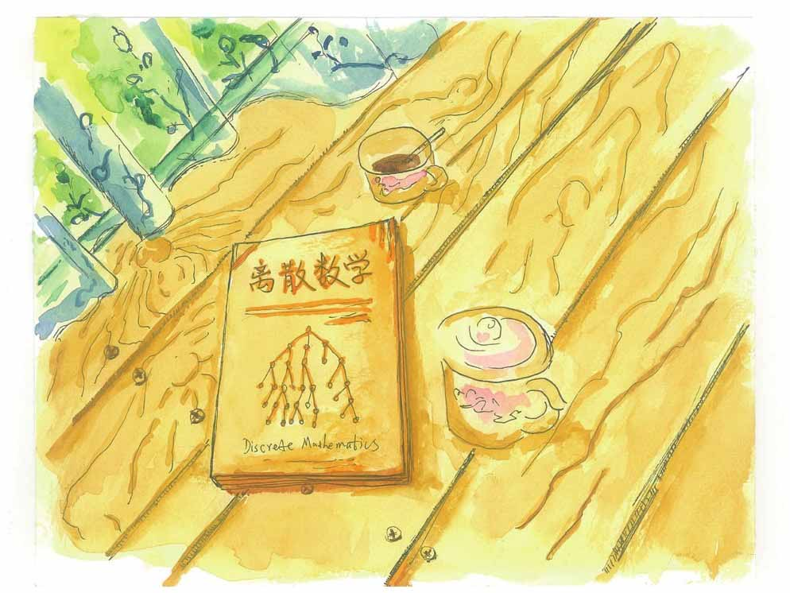

所谓“妈妈的来信”是我后来自作主张、改头换面添加上去的，里面的主要内容是我读大一的时候爸爸发给我的一封信。我这样做，爸爸也没有多说什么。
听妈妈说，最近这半年爸爸的身体差多了。昨天是星期六，我和女儿一起坐高铁去看望他们，本来我还打算带上乒乓球拍，跟爸爸切磋一下的，但妈妈说他已经很久没有打乒乓球了，我就带上了还在校对的书稿——《离散的世界——那个夏天，我们一起谈论离散数学》——就是您现在正在看的这本书最后选用的书名。这本书马上就要正式出版了，爸爸听到这个消息一定会很高兴的。
我想等女儿再大一点，我也会跟她聊聊这个离散的世界，告诉她有这样一门数学——它的名字叫作“离散数学”。
